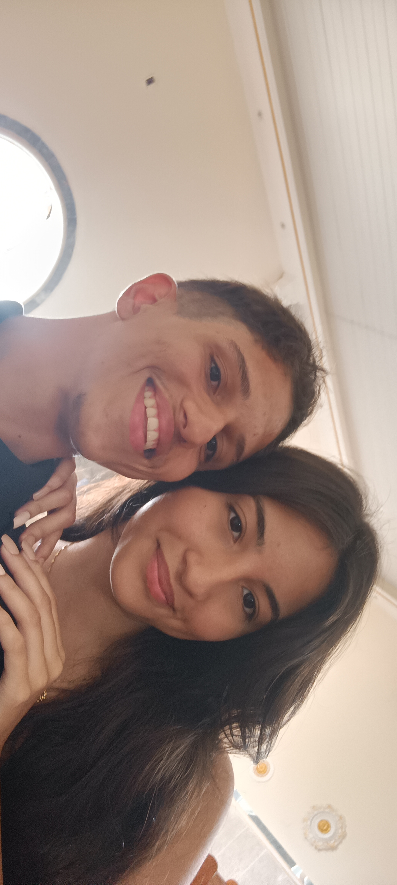

Construindo
meu caminho
na tecnologia.
Oi, eu sou o Thiarllis. Gosto de aprender, resolver problemas e transformar curiosidade em prática. Estou desenvolvendo minha base em tecnologia, informática e Python, sempre com vontade de evoluir.
Perfil
Thiarllis
Assistente Técnico • Estudante de Python
Um pouco sobre mim

Thiarllis Dias
22 anos
Se você chegou até aqui, é porque algo chamou sua atenção. Então, por favor, puxe uma cadeira e permita que eu me apresente de verdade.
Para ser bem sincero, não tenho um currículo gigantesco e nem sou o mestre da tecnologia (ainda nao). Sou um cara de Marcolândia, PI, que está construindo seu futuro um dia de cada vez.
Eu gosto de olhar para o trabalho de um jeito bem simples: me dê uma missão, e eu vou dar o meu melhor para cumpri-la. Se eu não souber como fazer, eu pergunto, eu pesquiso e eu aprendo.
Hoje, sou um estudante autônomo, tenho uma boa base de informática e decidi me aventurar nos estudos de Python. Estou no começo dessa jornada, aprendendo a lógica por trás das coisas, mas com a vontade de quem quer ir longe.
Minha vida
Antes de pensar em códigos, eu aprendi a trabalhar com as mãos e com as pessoas. Essas foram as minhas verdadeiras escolas:
Vendas & Caixa
Onde aprendi a ouvir as pessoas, ter paciência, lidar com dinheiro com responsabilidade e entender o que significa atender bem um cliente.
Carregador & Entregador
Aqui o trabalho foi pesado. Suar a camisa me ensinou o que é ter responsabilidade com horários e que não existe trabalho ruim quando se tem um objetivo.
O que eu trago comigo
Ainda estou enchendo essa mochila, mas aqui estão as coisas que eu já carrego com muita segurança:
Atitude
Conhecimento técnico
Bora bater um papo?
Se você precisa de alguém que não tem medo de colocar a mão na massa e que está pronto para abraçar novas experiências, me mande um "Oi".